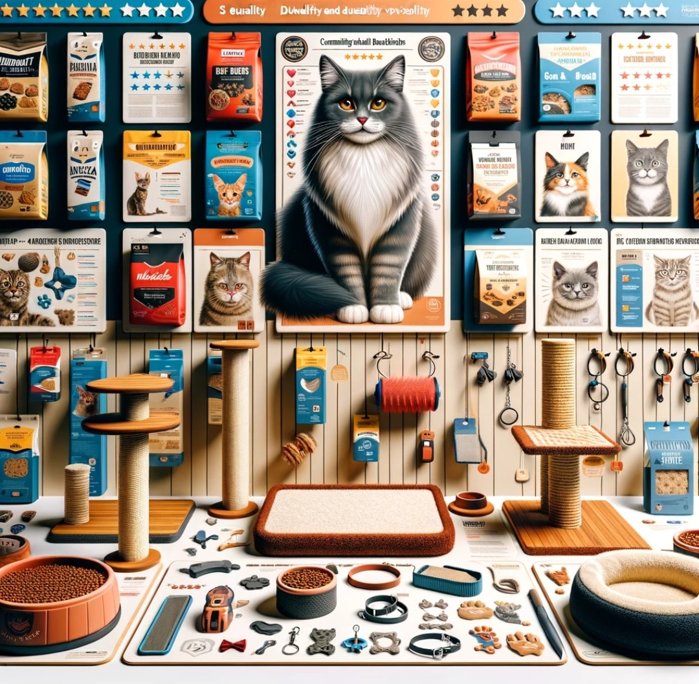
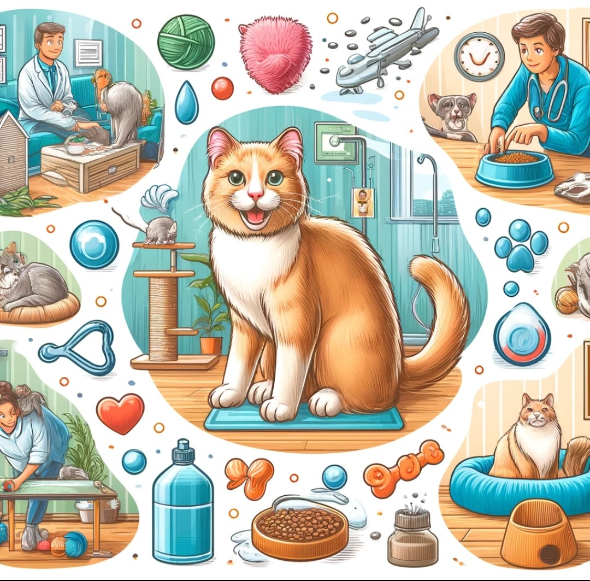
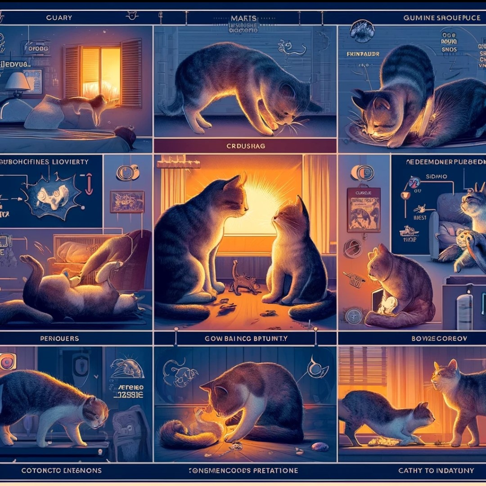

Health
Maintaining optimal health is essential for cats. Regular visits to the veterinarian for check-ups and vaccinations are crucial. Providing a balanced diet appropriate for their life stage helps prevent obesity and nutritional deficiencies. Hydration is vital, so always ensure access to fresh water. Proper grooming helps prevent skin issues and hairballs. Monitoring dental health and providing dental care are essential to prevent dental problems. Regular exercise and mental stimulation help keep cats physically fit and mentally sharp. Recognizing changes in behavior, appetite, or litter box habits promptly can aid in early detection of health issues. Prioritizing preventive care and prompt veterinary attention contribute to ensuring a long and healthy life for your cat.
Products
The market for cat products is vast, ranging from essential items like food, litter, and grooming tools to luxury accessories and high-tech gadgets. Cat owners can choose from a wide array of products, including interactive toys, scratching posts, cozy beds, and even stylish collars. Reviews play a crucial role in helping consumers make informed decisions about which products best suit their feline companions. Detailed feedback on quality, durability, effectiveness, and value for money helps cat owners navigate the plethora of options available. By sharing their experiences and recommendations, reviewers contribute to creating a community of well-informed and satisfied cat owners seeking the best products for their beloved pets.
Story
Cat stories are filled with heartwarming tales of companionship, resilience, and love. From kittens being rescued from perilous situations to senior cats finding forever homes, each story highlights the special bond between humans and felines. Stories of cats displaying extraordinary courage, loyalty, and kindness never fail to inspire and touch hearts. Whether it's a tale of a mischievous cat's antics or a heart-rending account of a stray cat's journey to a better life, cat stories evoke a range of emotions and showcase the unique charm and character of these enigmatic creatures. Sharing cat stories fosters a sense of community among cat lovers worldwide.
Care Tips
Proper cat care is essential for keeping your feline friend healthy and happy. Provide a balanced diet tailored to your cat's age and needs, ensuring access to clean water at all times. Regular grooming helps maintain your cat's coat and promotes bonding. Create a stimulating environment with toys, scratching posts, and cozy resting spots. Regular veterinary check-ups are crucial for preventive care and early detection of health issues. Maintain a clean litter box and ensure proper parasite control. Lastly, give your cat plenty of love and attention to nurture a trusting and affectionate relationship. Prioritizing these care tips can contribute to your cat's overall well-being and quality of life.
Breeds
Cats display a vast range of breeds, each with unique traits and personalities. From the sociable Siamese to the majestic Persian, breeds vary in size, coat patterns, and behaviors. The Maine Coon charms with its large size and friendly demeanor, while the Sphynx captivates with its hairless appearance and curiosity. Breeds like the Bengal showcase wild-like coats, contrasting with the distinctive folded ears of the Scottish Fold. Whether drawn to the lively Abyssinian or the affectionate Ragdoll, there's a feline companion for every preference. Understanding these breed specifics aids potential cat owners in selecting a pet that aligns with their lifestyle.
Behavior
Cat behavior is complex and intriguing. Cats are known for their independent nature, agility, and curiosity. They are crepuscular animals, most active at dawn and dusk, displaying bursts of energy followed by long periods of rest. Cats use body language to communicate, with behaviors like purring, meowing, kneading, and rubbing against objects. They are territorial animals, marking their territory with scent glands on their face and paws. Play hunting is a common behavior for cats, reflecting their natural instincts. Understanding cat behavior can help foster a strong bond between humans and their feline companions, leading to a harmonious and enriched relationship.